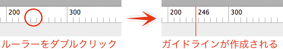
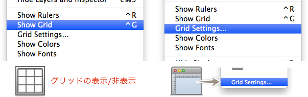
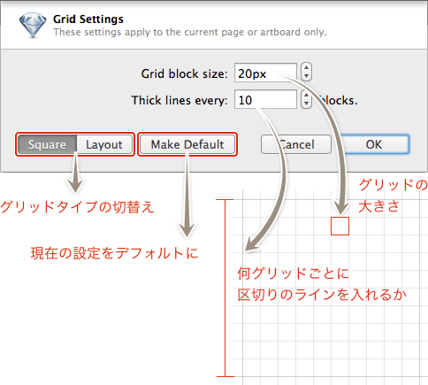
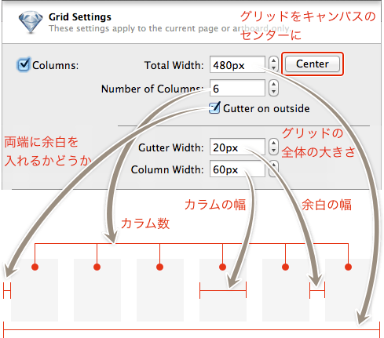
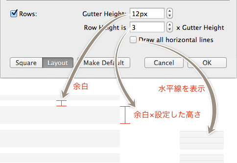

Sketch.app Advent Calender 14日目の記事です。今回は、ルーラー・ガイドライン・グリッドのガイド関連を解説します。
Sketchの基本。というSketch（Sketch 3）の基本操作にフォーカスした電子書籍をリリースしました。詳しくはこちらの「Sketchの基本。」のページをご覧ください。
この記事はSketch 2を元にした記事です。最新版の動作とは異なる可能性が高いため、参考程度にご覧ください。
## ルーラー Control＋Rでルーラーの表示非表示を切り替えます。ルーラーはそれぞれのアートボードの左上が起点となります。 ## ガイドライン ガイドラインはルーラー上でダブルクリックすると、座標とともに作成されます。PhotoshopやIllustratorのようにドラッグするとルーラーが動くので、注意してください（動いてもUndoできます）。
ガイドラインはドラッグで移動が可能です。そのままウィンドウ外にドラッグすると削除できます。注意点としては、作成後すぐに移動や削除しようとすると、なぜか同じ位置にたくさん複製されてなかなかな削除できない状況に陥ります。「あ、違う」と思ったら、拡大縮小するとかオブジェクトを選択するとかなど1アクション噛ますと、素直に移動や削除できます。（私の環境だけ？）
ちなみにルーラーを表示しないとガイドラインも表示されませんので、ガイドラインが消えた？と思ったら確認してみてください。
また、ガイドラインの操作は、Sketch Commandsを入れておくのと便利です。インストール方法などは、「Sketch.app のかゆいところに手が届く!? プラグインを入れて使ってみよう。」を参照してください。
グリッド
［Window］の［Show/Hide Grid］またはControl＋Gで、グリッドの表示を切り替えることができます。グリッドの設定は［Show/Hide Grid］の下にある［Grid Setting…］またはツールバーにある「Grid Setting…」から行います。

グリッドは、マス目タイプのグリッドと、グリッドシステムでよく見られるマージンのあるレイアウトグリッド＋Vertical Rythmのグリッドも表示できる2つがあります。
アートボードごとにグリッドを設定できるので、とあるアートボードではスクエアタイプ、こちらはレイアウトグリッドでという感じで、作成する内容に応じて使い分けることができます。
Square Grid

マス目タイプは、グリッドの大きさと何グリッドごとに区切り（太い線）を入れるかの設定なので、わかりやすいと思います。
「Make Default」をすると、次に新規作成したドキュメントから、この設定がデフォルトになります。
Layout Grid
垂直方向のグリッドは、「Columns」のチェックを入れることで表示されます。
「Total Width」はグリッド全体の幅で、端に余白を含んだ幅になります。その右隣にある「Center」ボタンは、通常、キャンバスの左に配置されるグリッドをセンターに配置します。
「Number of Columns」は設定した幅を何分割するかの設定で、入力すると「Gutter Width」の値が自動計算されます。
「Gutter on outside」のチェックを外せば、両端の余白がなくなります。
「Gutter Width」はカラム間の余白、「Column Width」はそのままカラムの幅です。どちらかの値を変更すれば、自動的に再計算されます。

水平方向のグリッドは、「Rows」にチェックを入れることで表示されます。
設定では、高さの基準となる「Gutter Height」と、グリッドの高さを決める「Row Height」の数値を入力します。
「Draw all horizontal lines」にチェックを入れると、「Gutter Height」で水平線が表示されます。
